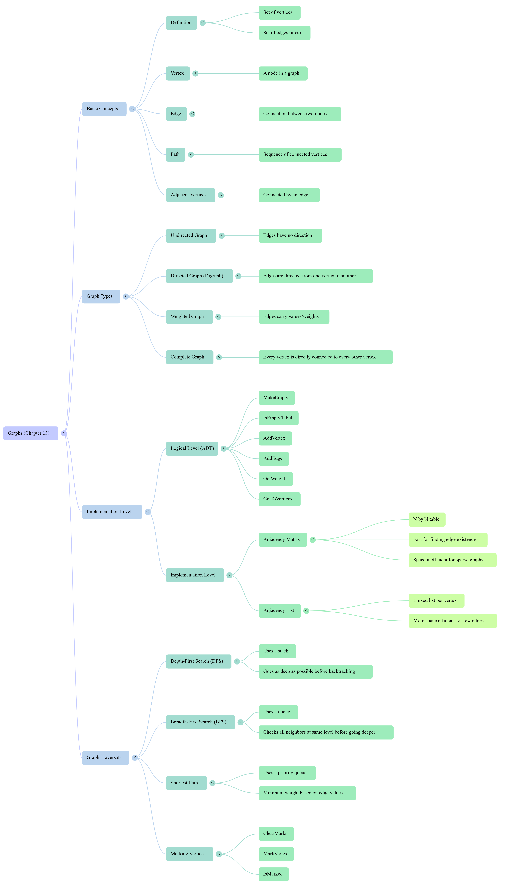

Xinxing Wu
<p class='titlep'> </p> # Graphs <hr> <br> Xinxing Wu
# Outline [<p class="hover-underline-animation">Graph basics</p>](#/ch1) [<p class="hover-underline-animation">DFS</p>](#/ch2) [<p class="hover-underline-animation">BFS</p>](#/ch3) [<p class="hover-underline-animation">Summary</p>](#/ch4) [<p class="hover-underline-animation">Application</p>](#/ch5)
## Goal <div id="shadebox-neon" class="shadebox neon"> By the end, you can: - Explain: **directed vs undirected**, **vertex**, **edge**, **path**, **complete**, **weighted** - Build a graph using: - **Adjacency matrix** - **Adjacency list** <hr> - Do graph searching: - **DFS** (uses a **stack**) - **BFS** (uses a **queue**) - Understand **shortest path** idea in weighted graphs (intro + simple Dijkstra) </div>
<p class="definition-rainbow-title">Graph basics</p>
<div class="definition-pro-Y-container"> <div class="definition-pro-Y-title">Where do we see graphs?</div> <div class="definition-pro-Y-shadebox"> <div style="width: 800px;"></div> - Friend connections (social networks) - Roads between cities - Course prerequisites - Web pages with links </div> </div> <div class="definition-pro-Y-container"> <div class="definition-pro-Y-title">From trees → graphs</div> <div class="definition-pro-Y-shadebox"> <div style="width: 800px;"></div> - A **tree** is a special kind of graph (<spanRED>no</spanRED> cycles, one “root”) <hr style="border:0;height:6px;border-radius:999px;background:linear-gradient(90deg,#ff3b3b,#ffb13b,#fff23b,#3bff8f,#3bc8ff,#8a3bff,#ff3b3b);background-size:300% 100%;animation:rainbowLine 4s linear infinite;"><style>@keyframes rainbowLine{0%{background-position:0% 50%}100%{background-position:300% 50%}}</style> - A **graph** is more general: - Can have <spanGREEN>cycles</spanGREEN> - Can have <spanGREEN>many</spanGREEN> ways to go from A to B - Can be directed <spanGREEN>or</spanGREEN> undirected (Directed graphs, digraphs, use edges with specific directions, arrows, to show one-way relationships, e.g., A <spanBYMix>Undirected</spanBYMix> graphs use simple lines to represent <spanBYMix>bidirectional relationships</spanBYMix>, e.g., A—B, where movement in both directions is permitted) </div> </div> <div class="definition-pro-Y-container"> <div class="definition-pro-Y-title">Graph words</div> <div class="definition-pro-Y-shadebox"> <div style="width: 800px;"></div> - **Vertex** (or node): a point (like “Austin”) - **Edge** (or arc): a connection between two vertices - **Path**: a sequence of vertices that connects start to end </div> </div> <div class="definition-pro-Y-container"> <div class="definition-pro-Y-title">Undirected graph</div> <div class="definition-pro-Y-shadebox"> <div style="width: 800px;"></div> - Edge has **no direction** - If A is connected to B, then B is connected to A <hr> Example: - Road between two cities (two-way) </div> </div> <div class="definition-pro-Y-container"> <div class="definition-pro-Y-title">Directed graph</div> <div class="definition-pro-Y-shadebox"> <div style="width: 800px;"></div> - Edge has **direction** - A → B does <spanRED>NOT</spanRED> automatically mean B → A <hr> Example: - One-way street - “Flight from Houston to Austin” is <spanRED>not automatically</spanRED> “Austin to Houston” </div> </div> <div class="definition-pro-Y-container"> <div class="definition-pro-Y-title">Adjacency</div> <div class="definition-pro-Y-shadebox"> <div style="width: 800px;"></div> Two vertices are **adjacent** if there is an edge between them. - Undirected: A adjacent to B means B adjacent to A <br> <br> - Directed: A adjacent to B <spanRED>depends on edge direction</spanRED> (A → B) </div> </div> <div class="definition-pro-Y-container"> <div class="definition-pro-Y-title">Path example</div> <div class="definition-pro-Y-shadebox"> <div style="width: 800px;"></div> If we have edges: - A—B, B—C, C—D Then A → D has a path: - A, B, C, D </div> </div> <div class="definition-pro-Y-container"> <div class="definition-pro-Y-title">Complete graph</div> <div class="definition-pro-Y-shadebox"> <div style="width: 800px;"></div> - Every vertex connects to every other vertex If there are N vertices: - Complete **directed**: $N*(N−1)$ edges - Complete **undirected**: $N*(N−1)/2$ edges <hr> See a smulation in Canvas. </div> </div> <div class="definition-pro-Y-container"> <div class="definition-pro-Y-title">Weighted graph</div> <div class="definition-pro-Y-shadebox"> <div style="width: 800px;"></div> - Each edge has a value (weight); Common meaning: cost, distance, time <hr> Example: - “Austin → Dallas = 200 miles” - “Dallas → Denver = 780 miles” <hr> <iframe src="https://www.google.com/maps?q=Kentucky+State+University&output=embed" width="600" height="300" style="border:0;" allowfullscreen="" loading="lazy"> </iframe> </div> </div> <div class="definition-pro-Y-container"> <div class="definition-pro-Y-title">Graph representations</div> <div class="definition-pro-Y-shadebox"> <div style="width: 800px;"></div> Two common ways to store a graph - **Adjacency matrix** - **Adjacency list** </div> </div> <div class="definition-pro-Y-container"> <div class="definition-pro-Y-title">Example graph</div> <div class="definition-pro-Y-shadebox"> <div style="width: 800px;"></div> - Vertices: A, B, C, D - Edges (undirected): (A,B), (A,D), (B,C), (B,D) <hr> We’ll reuse this for matrix, list, DFS, BFS. </div> </div> <div class="definition-container"> <div class="definition-title">Adjacency Matrix</div> <div class="definition-shadebox"> <div style="width: 800px;"></div> - DFS stands for Depth-First Search, which explores <spanBYMix>as far as</spanBYMix> possible along each branch before backtracking. - BFS stands for Breadth-First Search, which explores <spanBYMix>all</spanBYMix> neighbors of a node at the current depth level before moving on to nodes at the next level. </div> </div> <div class="definition-pro-Y-container"> <div class="definition-pro-Y-title">Adjacency Matrix</div> <div class="definition-pro-Y-shadebox"> <div style="width: 800px;"></div> A table (2D array): - rows = “from” - columns = “to” - value = connected? (or weight) Great when: - Graph is dense (lots of edges) - $\mathcal{O}(1)$ “is there an edge?” check </div> </div> <div class="definition-pro-Y-container"> <div class="definition-pro-Y-title">Adjacency Matrix (cont.)</div> <div class="definition-pro-Y-shadebox"> <div style="width: 800px;"></div> Vertices order: A=0, B=1, C=2, D=3 If unweighted, we can store 1/0: <div style="font-size: 1.6em; line-height: 1.5;"> ``` A B C D A 0 1 0 1 B 1 0 1 1 C 0 1 0 0 D 1 1 0 0 ``` </div> </div> </div> <div class="definition-pro-Y-container"> <div class="definition-pro-Y-title">adjacency matrix (unweighted)</div> <div class="definition-pro-Y-shadebox"> <div style="width: 800px;"></div> <div style="font-size: 1.6em; line-height: 1.5;"> ``` #include <iostream> #include <vector> using namespace std; int main() { int n = 4; // A,B,C,D vector<vector<int>> adj(n, vector<int>(n, 0)); // undirected edges adj[0][1] = 1; adj[1][0] = 1; // A-B adj[0][3] = 1; adj[3][0] = 1; // A-D adj[1][2] = 1; adj[2][1] = 1; // B-C adj[1][3] = 1; adj[3][1] = 1; // B-D cout << "Is A connected to C? " << adj[0][2] << "\n"; // 0 cout << "Is B connected to D? " << adj[1][3] << "\n"; // 1 return 0; } ``` </div> </div> </div> <div class="definition-pro-Y-container"> <div class="definition-pro-Y-title">Adjacency Matrix (cont.)</div> <div class="definition-pro-Y-shadebox"> <div style="width: 800px;"></div> vector<vector<int>> adj(n, vector<int>(n, 0)); <hr> Create a 2D vector named adj with: - $n$ rows - $n$ columns in each row - every value initialized to 0 So it is like making an $n\times n$ table of integers. </div> </div> <div class="definition-container"> <div class="definition-title">Adjacency Matrix (cont.)</div> <div class="definition-shadebox"> <div style="width: 800px;"></div> <div style="font-size: 1.6em; line-height: 1.5;"> ``` vector<vector<int>> adj(3, vector<int>(3, 0)); ``` </div> - “Make a square matrix of size n, filled with zeros.” then adj looks like: <div style="font-size: 1.6em; line-height: 1.5;"> ``` [ [0, 0, 0], [0, 0, 0], [0, 0, 0] ] ``` </div> - Make a square matrix of size n, filled with zeros. </div> </div> <div class="definition-pro-Y-container"> <div class="definition-pro-Y-title">Weighted adjacency matrix</div> <div class="definition-pro-Y-shadebox"> <div style="width: 800px;"></div> If no edge, store a special value like: - -1 (common for “no connection”) - or a very large number (not beginner-friendly) Example: - weight[A][B] = 50 - weight[A][C] = -1 (no edge) </div> </div> <div id="shadebox"> ### Example code <hr style="border: none; border-top: 1.5px solid cyan;"> ``` #include <iostream> #include <vector> using namespace std; int main() { int n = 3; // 0,1,2 vector<vector<int>> w(n, vector<int>(n, -1)); // directed weighted edges w[0][1] = 5; // 0 -> 1 weight 5 w[1][2] = 7; // 1 -> 2 weight 7 if (w[0][2] == -1) { cout << "No edge 0 -> 2\n"; } cout << "Weight 0 -> 1 = " << w[0][1] << "\n"; return 0; } ``` </div> <div class="definition-container"> <div class="definition-title">Adjacency List</div> <div class="definition-shadebox"> <div style="width: 800px;"></div> For each vertex, store a list of its neighbors. Great when: - graph is sparse (few edges) - you want to loop over neighbors fast </div> </div> <div class="definition-container"> <div class="definition-title">Adjacency list (cont.)</div> <div class="definition-shadebox"> <div style="width: 800px;"></div> - A: B, D - B: A, C, D - C: B - D: A, B </div> </div> <div class="definition-container"> <div class="definition-title">adjacency list (unweighted)</div> <div class="definition-shadebox"> <div style="width: 800px;"></div> <div style="font-size: 1.6em; line-height: 1.5;"> ``` #include <iostream> #include <vector> using namespace std; int main() { int n = 4; vector<vector<int>> adj(n); // undirected edges (add both ways) adj[0].push_back(1); adj[1].push_back(0); // A-B adj[0].push_back(3); adj[3].push_back(0); // A-D adj[1].push_back(2); adj[2].push_back(1); // B-C adj[1].push_back(3); adj[3].push_back(1); // B-D cout << "Neighbors of B: "; for (int v : adj[1]) cout << v << " "; cout << "\n"; return 0; } ``` </div> </div> </div> <div class="definition-container"> <div class="definition-title">Weighted adjacency list</div> <div class="definition-shadebox"> <div style="width: 800px;"></div> Store pairs: (neighbor, weight) Example: - adj[A] contains (B,200), (Chicago,1000) </div> </div> <div class="definition-container"> <div class="definition-title">adjacency list (weighted)</div> <div class="definition-shadebox"> <div style="width: 800px;"></div> <div style="font-size: 1.6em; line-height: 1.5;"> ``` #include <iostream> #include <vector> using namespace std; int main() { int n = 3; vector<vector<pair<int,int>>> adj(n); // directed weighted edges adj[0].push_back({1, 5}); // 0 -> 1 weight 5 adj[1].push_back({2, 7}); // 1 -> 2 weight 7 for (pair<int,int> e : adj[0]) { cout << "0 -> " << e.first << " weight " << e.second << "\n"; } return 0; } ``` </div> </div> </div> <div class="definition-container"> <div class="definition-title">Graph ADT</div> <div class="definition-shadebox"> <div style="width: 800px;"></div> A Graph ADT with operations like: - MakeEmpty, IsEmpty, IsFull - AddVertex(vertex) - AddEdge(from, to, weight) - GetWeight(from, to) - GetToVertices(vertex, queueOfNeighbors) </div> </div> <div class="definition-container"> <div class="definition-title">A Graph class</div> <div class="definition-shadebox"> <div style="width: 800px;"></div> Goal: make the operations feel real. We’ll: - store vertex names in a vector - use adjacency list with weights </div> </div> <div id="shadebox"> ### Example code <hr style="border: none; border-top: 1.5px solid cyan;"> ``` #include <iostream> #include <vector> #include <string> using namespace std; class Graph { private: vector<string> names; // vertex labels vector<vector<pair<int,int>>> adj; // (neighborIndex, weight) int findIndex(string name) { for (int i = 0; i < (int)names.size(); i++) { if (names[i] == name) return i; } return -1; } public: void addVertex(string name) { if (findIndex(name) != -1) return; names.push_back(name); adj.push_back(vector<pair<int,int>>()); } void addEdge(string from, string to, int w, bool directed) { int a = findIndex(from); int b = findIndex(to); if (a == -1 || b == -1) return; adj[a].push_back({b, w}); if (!directed) adj[b].push_back({a, w}); } void print() { for (int i = 0; i < (int)names.size(); i++) { cout << names[i] << ": "; for (pair<int,int> e : adj[i]) { cout << "(" << names[e.first] << "," << e.second << ") "; } cout << "\n"; } } }; int main() { Graph g; g.addVertex("A"); g.addVertex("B"); g.addVertex("C"); g.addVertex("D"); g.addEdge("A","B",1,false); g.addEdge("A","D",1,false); g.addEdge("B","C",1,false); g.addEdge("B","D",1,false); g.print(); return 0; } ``` </div> <div class="question-container"> <div class="question-title">Notes</div> <div class="question-shadebox"> <div style="width: 800px;"></div> - We map vertex labels to indexes - The graph storage is “just vectors” - Everything else (DFS/BFS) will use: - neighbors of a vertex - visited marks </div> </div>
<p class="definition-rainbow-title">Depth-First Search (DFS)</p>
<div class="definition-pro-Y-container"> <div class="definition-pro-Y-title">Why search/traverse a graph?</div> <div class="definition-pro-Y-shadebox"> <div style="width: 800px;"></div> Common question: - “Can I get from X to Y?” For example, using the airline graph: - “Can we reach a destination city from a start city?” </div> </div> <div class="definition-pro-Y-container"> <div class="definition-pro-Y-title">DFS idea</div> <div class="definition-pro-Y-shadebox"> <div style="width: 800px;"></div> DFS explores: - “Go as far as possible down one path” - If stuck, backtrack and try another path The topic uses a stack for this. </div> </div> <div class="definition-pro-Y-container"> <div class="definition-pro-Y-title">DFS uses a Stack</div> <div class="definition-pro-Y-shadebox"> <div style="width: 800px;"></div> Stack = LIFO (last in, first out) Operations: - push(x) - pop() - top() </div> </div> <div class="definition-pro-Y-container"> <div class="definition-pro-Y-title">Visited marks</div> <div class="definition-pro-Y-shadebox"> <div style="width: 800px;"></div> Graphs can have cycles: - If you keep revisiting, you can loop forever. So we need: - a visited[] array - mark a vertex as visited when we first handle it </div> </div> <div class="definition-pro-Y-container"> <div class="definition-pro-Y-title">Visited marks (cont.)</div> <div class="definition-pro-Y-shadebox"> <div style="width: 800px;"></div> The section calls these kinds of operations <div id="shadebox-glass" class="shadebox glass"> - ClearMarks - MarkVertex - IsMarked </div> </div> </div> <div class="definition-pro-Y-container"> <div class="definition-pro-Y-title">DFS (iterative) — high-level steps</div> <div class="definition-pro-Y-shadebox"> <div style="width: 800px;"></div> Push the start vertex While stack not empty: - take the top - if it is the goal: done - otherwise push its unvisited neighbors - mark visited so we don’t repeat </div> </div> <div class="definition-pro-Y-container"> <div class="definition-pro-Y-title">DFS trace</div> <div class="definition-pro-Y-shadebox"> <div style="width: 800px;"></div> Graph: - A: B, D - B: A, C, D - C: B - D: A, B Goal: start A, find C Possible DFS path: A → D → B → C (DFS depends on neighbor order.) </div> </div> <div class="definition-pro-Y-container"> <div class="definition-pro-Y-title">DFS (adjacency list)</div> <div class="definition-pro-Y-shadebox"> <div style="width: 800px;"></div> <div style="font-size: 1.6em; line-height: 1.5;"> ``` #include <iostream> #include <vector> #include <stack> using namespace std; bool dfsPathExists(vector<vector<int>> &adj, int start, int target) { int n = adj.size(); vector<bool> visited(n, false); stack<int> st; st.push(start); while (!st.empty()) { int v = st.top(); st.pop(); if (visited[v]) continue; visited[v] = true; if (v == target) return true; for (int u : adj[v]) { if (!visited[u]) st.push(u); } } return false; } int main() { int n = 4; vector<vector<int>> adj(n); // undirected: A-B, A-D, B-C, B-D adj[0].push_back(1); adj[1].push_back(0); adj[0].push_back(3); adj[3].push_back(0); adj[1].push_back(2); adj[2].push_back(1); adj[1].push_back(3); adj[3].push_back(1); cout << dfsPathExists(adj, 0, 2) << "\n"; // A to C -> 1 (true) return 0; } ``` </div> </div> </div> <div class="definition-pro-Y-container"> <div class="definition-pro-Y-title">DFS</div> <div class="definition-pro-Y-shadebox"> <div style="width: 800px;"></div> DFS: what beginners should remember <div id="shadebox-glass" class="shadebox glass"> DFS is great for: - “Does a path exist?” - exploring all reachable nodes With stack, DFS tends to go deep first </div> </div> </div> <div class="definition-pro-Y-container"> <div class="definition-pro-Y-title">DFS vs recursion</div> <div class="definition-pro-Y-shadebox"> Many people write DFS recursively. But the “stack story” is perfect for beginners: - recursion is basically “a hidden call stack” </div> </div>
<p class="definition-rainbow-title">BFS</p>
<div class="definition-pro-Y-container"> <div class="definition-pro-Y-title">BFS</div> <div class="definition-pro-Y-shadebox"> <div style="width: 800px;"></div> BFS explores: - “all nodes 1 step away” - then “all nodes 2 steps away” - then “3 steps away”… The section uses a queue for this. </div> </div> <div class="definition-pro-Y-container"> <div class="definition-pro-Y-title">BFS uses a Queue</div> <div class="definition-pro-Y-shadebox"> <div style="width: 800px;"></div> Queue = FIFO (first in, first out) Operations: - enqueue(x) - dequeue() - front() </div> </div> <div class="definition-pro-Y-container"> <div class="definition-pro-Y-title">BFS is perfect for…</div> <div class="definition-pro-Y-shadebox"> <div style="width: 800px;"></div> In an unweighted graph: - BFS finds the shortest number of edges from start to target (Shortest in “hops”, not in miles.) </div> </div> <div class="definition-pro-Y-container"> <div class="definition-pro-Y-title">BFS (simple steps)</div> <div class="definition-pro-Y-shadebox"> <div style="width: 800px;"></div> Enqueue start Mark start visited While queue not empty: - dequeue v - if v is target: done - for each neighbor u: - if not visited: mark visited, enqueue u </div> </div> <div class="definition-pro-Y-container"> <div class="definition-pro-Y-title">BFS (adjacency list)</div> <div class="definition-pro-Y-shadebox"> <div style="width: 800px;"></div> <div style="font-size: 1.6em; line-height: 1.5;"> ``` #include <iostream> #include <vector> #include <queue> using namespace std; bool bfsPathExists(vector<vector<int>> &adj, int start, int target) { int n = adj.size(); vector<bool> visited(n, false); queue<int> q; q.push(start); visited[start] = true; while (!q.empty()) { int v = q.front(); q.pop(); if (v == target) return true; for (int u : adj[v]) { if (!visited[u]) { visited[u] = true; q.push(u); } } } return false; } int main() { int n = 4; vector<vector<int>> adj(n); adj[0].push_back(1); adj[1].push_back(0); adj[0].push_back(3); adj[3].push_back(0); adj[1].push_back(2); adj[2].push_back(1); adj[1].push_back(3); adj[3].push_back(1); cout << bfsPathExists(adj, 0, 2) << "\n"; // A->C true return 0; } ``` </div> </div> </div> <div class="definition-pro-Y-container"> <div class="definition-pro-Y-title">Shortest path</div> <div class="definition-pro-Y-shadebox"> <div style="width: 800px;"></div> BFS to get the actual shortest path <div id="shadebox-glass" class="shadebox glass"> To reconstruct a path, keep a parent[] array: - parent[u] = v when you first discover u from v Then you can walk backward from target to start. </div> </div> </div> <div class="definition-pro-Y-container"> <div class="definition-pro-Y-title">BFS shortest path (unweighted)</div> <div class="definition-pro-Y-shadebox"> <div style="width: 800px;"></div> <div style="font-size: 1.6em; line-height: 1.5;"> ``` #include <iostream> #include <vector> #include <queue> using namespace std; vector<int> bfsShortestPath(vector<vector<int>> &adj, int start, int target) { int n = adj.size(); vector<bool> visited(n, false); vector<int> parent(n, -1); queue<int> q; q.push(start); visited[start] = true; while (!q.empty()) { int v = q.front(); q.pop(); if (v == target) break; for (int u : adj[v]) { if (!visited[u]) { visited[u] = true; parent[u] = v; q.push(u); } } } // build path by walking parents backwards vector<int> path; if (!visited[target]) return path; // empty = no path int cur = target; while (cur != -1) { path.push_back(cur); cur = parent[cur]; } // reverse manually (beginner-friendly) for (int i = 0, j = (int)path.size() - 1; i < j; i++, j--) { int tmp = path[i]; path[i] = path[j]; path[j] = tmp; } return path; } int main() { int n = 4; vector<vector<int>> adj(n); adj[0].push_back(1); adj[1].push_back(0); adj[0].push_back(3); adj[3].push_back(0); adj[1].push_back(2); adj[2].push_back(1); adj[1].push_back(3); adj[3].push_back(1); vector<int> path = bfsShortestPath(adj, 0, 2); if (path.size() == 0) cout << "No path\n"; else { cout << "Path: "; for (int v : path) cout << v << " "; cout << "\n"; } return 0; } ``` </div> </div> </div> <div class="definition-pro-Y-container"> <div class="definition-pro-Y-title">DFS vs BFS</div> <div class="definition-pro-Y-shadebox"> <div style="width: 800px;"></div> DFS: - uses stack - goes deep first - good for exploration / existence BFS: - uses queue - level-by-level - best for shortest path in unweighted graphs </div> </div> <div class="definition-pro-Y-container"> <div class="definition-pro-Y-title">Weighted shortest path</div> <div class="definition-pro-Y-shadebox"> <div style="width: 800px;"></div> In weighted graphs: - each edge has a cost (distance) - “shortest path” means smallest total weight We can’t use plain BFS for weights. </div> </div> <div class="definition-pro-Y-container"> <div class="definition-pro-Y-title">Dijkstra idea</div> <div class="definition-pro-Y-shadebox"> <div style="width: 800px;"></div> Keep: - dist[v] = best distance we know from start to v Always expand the vertex with the smallest dist next. A priority queue helps us pick the smallest quickly. </div> </div> <div class="definition-pro-Y-container"> <div class="definition-pro-Y-title">Weighted example</div> <div class="definition-pro-Y-shadebox"> <div style="width: 800px;"></div> Edges: - 0→1 (5) - 0→2 (1) - 2→1 (1) Shortest 0→1 is not 5 It is: - 0→2→1 = 1 + 1 = 2 </div> </div> <div class="definition-pro-Y-container"> <div class="definition-pro-Y-title">Dijkstra (using priority_queue)</div> <div class="definition-pro-Y-shadebox"> <div style="width: 800px;"></div> <div style="font-size: 1.6em; line-height: 1.5;"> ``` #include <iostream> #include <vector> #include <queue> #include <limits> using namespace std; vector<int> dijkstra(vector<vector<pair<int,int>>> &adj, int start) { int n = adj.size(); const int INF = numeric_limits<int>::max(); vector<int> dist(n, INF); // (distance, vertex) priority_queue<pair<int,int>, vector<pair<int,int>>, greater<pair<int,int>>> pq; dist[start] = 0; pq.push({0, start}); while (!pq.empty()) { pair<int,int> cur = pq.top(); pq.pop(); int d = cur.first; int v = cur.second; if (d != dist[v]) continue; // outdated entry for (pair<int,int> e : adj[v]) { int to = e.first; int w = e.second; if (dist[v] != INF && dist[v] + w < dist[to]) { dist[to] = dist[v] + w; pq.push({dist[to], to}); } } } return dist; } int main() { int n = 3; vector<vector<pair<int,int>>> adj(n); adj[0].push_back({1,5}); adj[0].push_back({2,1}); adj[2].push_back({1,1}); vector<int> dist = dijkstra(adj, 0); cout << "dist to 1 = " << dist[1] << "\n"; // 2 return 0; } ``` </div> </div> </div> <div class="question-container"> <div class="question-title">Notes</div> <div class="question-shadebox"> <div style="width: 800px;"></div> - Works for non-negative weights - Uses a priority queue to always pick “closest next” - Gives shortest distances from one start to all vertices </div> </div>
<p class="definition-rainbow-title">Summary</p>
<div class="question-container"> <div class="question-title">Notes</div> <div class="question-shadebox"> <div style="width: 800px;"></div> <div id="shadebox"> BFS (Breadth-First Search) BFS explores <spanGREEN>level by level</spanGREEN>. It checks all nearby choices first, then moves farther out. <a href="https://medium.com/@luthfisauqi17_68455/artificial-intelligence-search-problem-solve-maze-using-breadth-first-search-bfs-algorithm-255139c6e1a3 ">Solve Maze using BFS Algorithm</a> </div> <div id="shadebox"> DFS (Depth-First Search) DFS explores one path <spanGREEN>as deep as possible first</spanGREEN>. It keeps going forward until it cannot, then comes back. <a href="https://medium.com/swlh/solving-mazes-with-depth-first-search-e315771317ae">Solving mazes with DFS</a> </div> </div> </div> <div class="question-container"> <div class="question-title">Notes</div> <div class="question-shadebox"> <div style="width: 800px;"></div> <spanGREEN>Example</spanGREEN>: Finding a person in a social network - Imagine you want to find “someone who knows Alice.” <hr> You first ask: - all your direct friends - then friends of your friends - then the next level So BFS searches by distance from you. This is good when you want the <spanBYMix>closest</spanBYMix> connection. </div> </div> <div class="question-container"> <div class="question-title">Notes</div> <div class="question-shadebox"> <div style="width: 800px;"></div> <spanGREEN>Example</spanGREEN>: Finding a person in a social network - Imagine you want to find “someone who knows Alice.” <hr> You ask one friend, then follow that friend’s contacts deeply: - your friend - that friend’s friend - that person’s friend - and so on Only when that path fails do you go back and try another friend. </div> </div> <div class="question-container"> <div class="question-title">Notes</div> <div class="question-shadebox"> <div style="width: 800px;"></div> Idea: - BFS = “check everyone 1 step away, then 2 steps away, then 3…” - DFS = “follow one chain as far as it goes” </div> </div> <div class="question-container"> <div class="question-title">Notes</div> <div class="question-shadebox"> <div style="width: 800px;"></div> <spanGREEN>Example</spanGREEN>: Exploring rooms in a building - Suppose you are searching for a lost phone in a school building. <hr> BFS You check: - all rooms on the current floor near you first - then the next hallway - then another floor You spread outward evenly. This is useful if you want to find the phone in the nearest possible place first. </div> </div> <div class="question-container"> <div class="question-title">Notes</div> <div class="question-shadebox"> <div style="width: 800px;"></div> <spanGREEN>Example</spanGREEN>: Exploring rooms in a building - Suppose you are searching for a lost phone in a school building. <hr> DFS You enter one room, then keep going deeply: - room A - closet inside room A - back room inside that closet area - then return You fully finish one area before moving to the next. </div> </div> <div class="question-container"> <div class="question-title">Notes</div> <div class="question-shadebox"> <div style="width: 800px;"></div> Idea: - BFS = “search nearby rooms first” - DFS = “finish one branch completely first” </div> </div> <div class="question-container"> <div class="question-title">Notes</div> <div class="question-shadebox"> <div style="width: 800px;"></div> <spanGREEN>Example</spanGREEN>: Navigating a maze - Imagine you are in a maze and want to find the exit. <hr> BFS You try all paths that are 1 step away, then 2 steps away, then 3 steps away. This helps find the <spanBYMix>shortest</spanBYMix> path to the exit. </div> </div> <div class="question-container"> <div class="question-title">Notes</div> <div class="question-shadebox"> <div style="width: 800px;"></div> <spanGREEN>Example</spanGREEN>: Navigating a maze - Imagine you are in a maze and want to find the exit. <hr> You pick one path and keep walking until: - you reach the exit, or - hit a dead end Then you backtrack and try another path. </div> </div> <div class="question-container"> <div class="question-title">Notes</div> <div class="question-shadebox"> <div style="width: 800px;"></div> Idea: - BFS is often better for shortest path - DFS is often simpler for exploring all possibilities </div> </div> <div class="question-container"> <div class="question-title">Notes</div> <div class="question-shadebox"> <div style="width: 800px;"></div> ``` A / | \ B C D / \ E F ``` - BFS order: A → B → C → D → E → F - DFS order: A → B → E → F → C → D (one possible DFS order) Because DFS keeps going deeper before returning. </div> </div> <iframe src="./Discussion12.html" style="width:100%;max-width:1200px;height:620px;border:0;border-radius:14px;overflow:hidden;display:block;margin:30px auto;" allow="autoplay" sandbox="allow-scripts allow-same-origin"> </iframe> <iframe style="width:100%;max-width:1200px;height:700px;border:0;border-radius:16px;overflow:hidden;display:block;margin:0 auto;box-shadow:0 18px 50px rgba(0,0,0,.35);background:rgba(0,0,0,.06);" src="./files/15_Graphs.pdf#page=1&zoom=page-width" allow="fullscreen" loading="lazy"> </iframe> <iframe style="width:100%;max-width:1200px;height:700px;border:0;border-radius:12px;overflow:hidden;display:block;margin:0 auto;" srcdoc='<!doctype html> <html> <head> <meta charset="utf-8" /> <meta name="viewport" content="width=device-width,initial-scale=1" /> <style> body{margin:0;padding:14px;font-family:Arial,Helvetica,sans-serif;background:#32a881;} .wrap{width:100%;max-width:1200px;margin:0 auto;} .bar{display:flex;gap:10px;align-items:center;margin-bottom:10px;} button{padding:8px 12px;border:1px solid #ccc;border-radius:8px;background:#fff;cursor:pointer;} .label{margin-left:auto;font-size:14px;color:#333;} .box{width:100%;height:650px;border:1px solid rgba(0,0,0,.18);border-radius:12px;overflow:auto;background:#fafafa;box-shadow:0 10px 25px rgba(0,0,0,.10);} img{display:block;width:auto;height:700px;max-width:none;max-height:none;transform-origin:top left;transform:scale(1);} </style> </head> <body> <div class="wrap" id="root"> <div class="bar"> <button id="zin" type="button">Zoom +</button> <button id="zout" type="button">Zoom -</button> <button id="zreset" type="button">Reset (100%)</button> <span class="label" id="zl">100%</span> </div> <div class="box" id="box"> <p></p> </div> </div> <script> (function(){ var zoom=1, step=0.2, min=0.2, max=6; var img=document.getElementById("img"); var label=document.getElementById("zl"); var box=document.getElementById("box"); function apply(){ img.style.transform="scale("+zoom+")"; label.textContent=Math.round(zoom*100)+"%"; } document.getElementById("zin").addEventListener("click", function(){ zoom=Math.min(max, zoom+step); apply(); }); document.getElementById("zout").addEventListener("click", function(){ zoom=Math.max(min, zoom-step); apply(); }); document.getElementById("zreset").addEventListener("click", function(){ zoom=1; apply(); }); box.addEventListener("wheel", function(e){ if(!e.ctrlKey) return; e.preventDefault(); zoom += (e.deltaY < 0) ? step : -step; zoom = Math.max(min, Math.min(max, zoom)); apply(); }, {passive:false}); apply(); })(); </script> </body> </html>'> </iframe> ## Review <video controls> <source src="./files/The_Language_of_Connections.mp4" type="video/mp4"> </video>
<p class="definition-rainbow-title">Application</p>
<div class="definition-com-container"> <div class="definition-com-title">Question</div> <div class="definition-com-shadebox"> <div style="width: 800px;"></div> In an undirected graph, if there is an edge between A and B, then A is adjacent to B and B is adjacent to A. <button type="button" class="reveal-btn" data-answer="answer-q1">Show Answer</button> <div id="answer-q1" class="answer-box"> <b>Answer:</b>True </div> <hr style="border: none; border-top: 2px dashed orange;"> In a directed graph, if there is an edge A → B, then there must also be an edge B → A. <button type="button" class="reveal-btn" data-answer="answer-q2">Show Answer</button> <div id="answer-q2" class="answer-box"> <b>Answer:</b>False </div> <hr style="border: none; border-top: 2px dashed orange;"> A path is a sequence of vertices connected by edges. <button type="button" class="reveal-btn" data-answer="answer-q3">Show Answer</button> <div id="answer-q3" class="answer-box"> <b>Answer:</b>True </div> </div> </div> <div class="definition-com-container"> <div class="definition-com-title">Question</div> <div class="definition-com-shadebox"> An adjacency matrix for a graph with n vertices uses n×n storage. <button type="button" class="reveal-btn" data-answer="answer-q4">Show Answer</button> <div id="answer-q4" class="answer-box"> <b>Answer:</b>True </div> <hr style="border: none; border-top: 2px dashed orange;"> An adjacency list is usually more memory-efficient than an adjacency matrix for sparse graphs. <button type="button" class="reveal-btn" data-answer="answer-q5">Show Answer</button> <div id="answer-q5" class="answer-box"> <b>Answer:</b>True </div> </div> </div> <div class="definition-com-container"> <div class="definition-com-title">Question</div> <div class="definition-com-shadebox"> DFS (Depth-First Search) is commonly implemented using a queue. <button type="button" class="reveal-btn" data-answer="answer-q6">Show Answer</button> <div id="answer-q6" class="answer-box"> <b>Answer:</b>False (DFS uses a stack or recursion) </div> <hr style="border: none; border-top: 2px dashed orange;"> BFS (Breadth-First Search) explores vertices level by level and is commonly implemented using a queue. <button type="button" class="reveal-btn" data-answer="answer-q7">Show Answer</button> <div id="answer-q7" class="answer-box"> <b>Answer:</b>True </div> <hr style="border: none; border-top: 2px dashed orange;"> Marking vertices as “visited” helps prevent infinite loops when a graph has cycles. <button type="button" class="reveal-btn" data-answer="answer-q8">Show Answer</button> <div id="answer-q8" class="answer-box"> <b>Answer:</b>True </div> </div> </div> <div class="definition-com-container"> <div class="definition-com-title">Question</div> <div class="definition-com-shadebox"> In an unweighted graph, BFS can find a path with the minimum number of edges from start to target. <button type="button" class="reveal-btn" data-answer="answer-q9">Show Answer</button> <div id="answer-q9" class="answer-box"> <b>Answer:</b>True </div> <hr style="border: none; border-top: 2px dashed orange;"> Dijkstra’s algorithm works correctly even if some edges have negative weights. <button type="button" class="reveal-btn" data-answer="answer-q10">Show Answer</button> <div id="answer-q10" class="answer-box"> <b>Answer:</b>False (standard Dijkstra assumes non-negative weights) </div> </div> </div> <div class="definition-com-container"> <div class="definition-com-title">Question</div> <div class="definition-com-shadebox"> In graph terminology, a vertex is also called a: A) Edge B) Node D) Path<button type="button" class="reveal-btn" data-answer="answer-q11">Show Answer</button> <div id="answer-q11" class="answer-box"> <b>Answer:</b>B </div> </div> </div> <div class="definition-com-container"> <div class="definition-com-title">Question</div> <div class="definition-com-shadebox"> Which statement best describes an edge in a graph? A) A list of all vertices B) A connection between two vertices C) A numeric value stored in a vertex D) A loop that repeats forever <button type="button" class="reveal-btn" data-answer="answer-q12">Show Answer</button> <div id="answer-q12" class="answer-box"> <b>Answer:</b>B </div> </div> </div> <div class="definition-com-container"> <div class="definition-com-title">Question</div> <div class="definition-com-shadebox"> What does it mean if two vertices are adjacent? A) They have the same label B) There is an edge connecting them C) They are in different graphs D) They must be in a tree <button type="button" class="reveal-btn" data-answer="answer-q13">Show Answer</button> <div id="answer-q13" class="answer-box"> <b>Answer:</b>B </div> </div> </div> <div class="definition-com-container"> <div class="definition-com-title">Question</div> <div class="definition-com-shadebox"> Which representation allows O(1) checking of whether an edge u→v exists (usually)? A) Adjacency list B) Adjacency matrix C) Stack D) Queue <button type="button" class="reveal-btn" data-answer="answer-q14">Show Answer</button> <div id="answer-q14" class="answer-box"> <b>Answer:</b>B </div> </div> </div> <div class="definition-com-container"> <div class="definition-com-title">Question</div> <div class="definition-com-shadebox"> For a sparse graph, which representation is usually more space efficient? A) Adjacency matrix B) Adjacency list C) A complete table of all paths D) A binary search tree <button type="button" class="reveal-btn" data-answer="answer-q15">Show Answer</button> <div id="answer-q15" class="answer-box"> <b>Answer:</b>B </div> </div> </div> <div class="definition-com-container"> <div class="definition-com-title">Question</div> <div class="definition-com-shadebox"> DFS typically uses which data structure (iterative version)? A) Queue B) Stack C) Heap D) Hash table <button type="button" class="reveal-btn" data-answer="answer-q16">Show Answer</button> <div id="answer-q16" class="answer-box"> <b>Answer:</b>B </div> </div> </div> <div class="definition-com-container"> <div class="definition-com-title">Question</div> <div class="definition-com-shadebox"> BFS typically uses which data structure? A) Queue B) Stack C) Array only D) Linked list only <button type="button" class="reveal-btn" data-answer="answer-q17">Show Answer</button> <div id="answer-q17" class="answer-box"> <b>Answer:</b>A </div> </div> </div> <div class="definition-com-container"> <div class="definition-com-title">Question</div> <div class="definition-com-shadebox"> In BFS, when is a good beginner-friendly time to mark a vertex as visited to avoid duplicates? A) After the algorithm finishes B) When you enqueue it C) Only when you reach the target D) Never mark visited <button type="button" class="reveal-btn" data-answer="answer-q18">Show Answer</button> <div id="answer-q18" class="answer-box"> <b>Answer:</b>B </div> </div> </div> <div class="definition-com-container"> <div class="definition-com-title">Question</div> <div class="definition-com-shadebox"> In an unweighted graph, the shortest path found by BFS is shortest in terms of: A) Total weight B) Total distance (miles/km) C) Number of edges (hops) D) Number of vertices in the whole graph <button type="button" class="reveal-btn" data-answer="answer-q19">Show Answer</button> <div id="answer-q19" class="answer-box"> <b>Answer:</b>C </div> </div> </div> <div class="definition-com-container"> <div class="definition-com-title">Question</div> <div class="definition-com-shadebox"> Dijkstra’s algorithm is mainly used to find: A) The deepest path in a graph B) The shortest paths in a weighted graph with non-negative weights C) The number of connected components in any graph D) The adjacency matrix of a graph <button type="button" class="reveal-btn" data-answer="answer-q20">Show Answer</button> <div id="answer-q20" class="answer-box"> <b>Answer:</b>B </div> </div> </div> <div class="definition-pro-Y-container"> <div class="definition-pro-Y-title">Lab</div> <div class="definition-pro-Y-shadebox"> Implement Dijkstra (using priority_queue) </div> </div> <div id="shadebox"> ### Example code <hr style="border: none; border-top: 1.5px solid cyan;"> ``` #include <iostream> #include <vector> #include <queue> #include <limits> using namespace std; vector<int> dijkstra(vector<vector<pair<int,int>>> &adj, int start) { int n = adj.size(); const int INF = numeric_limits<int>::max(); vector<int> dist(n, INF); // (distance, vertex) priority_queue<pair<int,int>, vector<pair<int,int>>, greater<pair<int,int>>> pq; dist[start] = 0; pq.push({0, start}); while (!pq.empty()) { pair<int,int> cur = pq.top(); pq.pop(); int d = cur.first; int v = cur.second; if (d != dist[v]) continue; // outdated entry for (pair<int,int> e : adj[v]) { int to = e.first; int w = e.second; if (dist[v] != INF && dist[v] + w < dist[to]) { dist[to] = dist[v] + w; pq.push({dist[to], to}); } } } return dist; } int main() { int n = 3; vector<vector<pair<int,int>>> adj(n); adj[0].push_back({1,5}); adj[0].push_back({2,1}); adj[2].push_back({1,1}); vector<int> dist = dijkstra(adj, 0); cout << "dist to 1 = " << dist[1] << "\n"; // 2 return 0; } ``` </div>